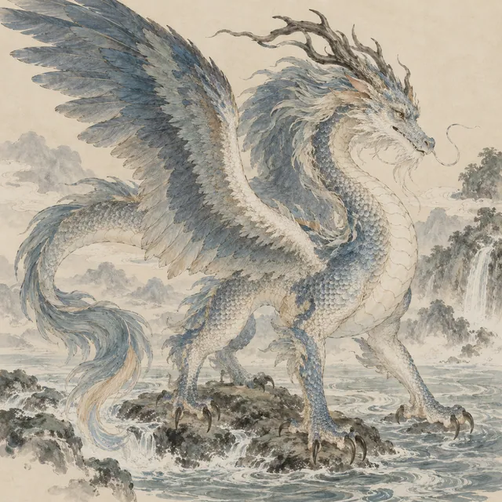
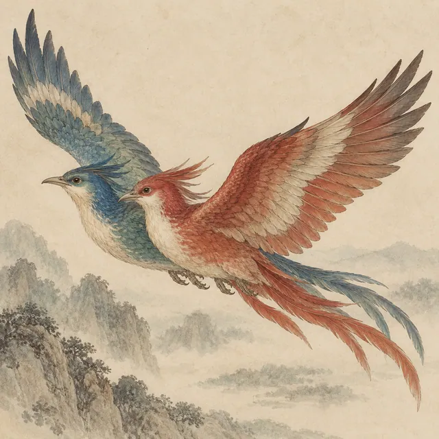
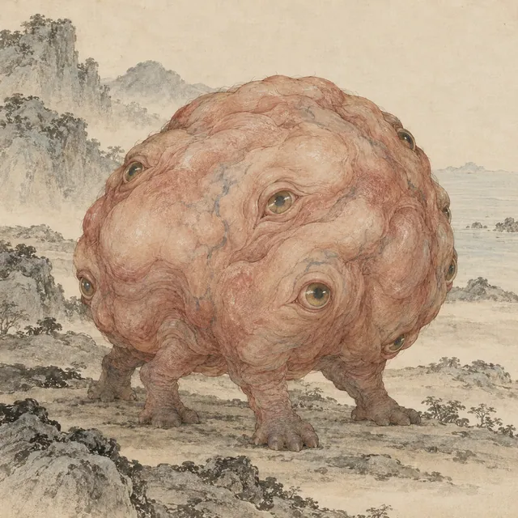
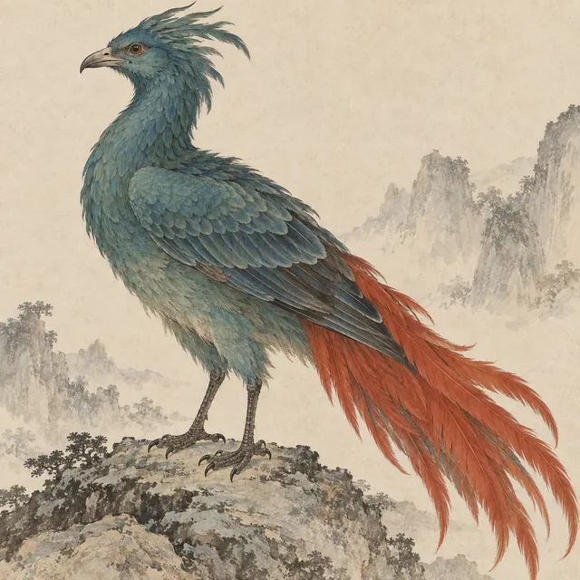

同卷里的其他生灵
继续探索 ↗
NO. 211↗应龙
大荒东经能蓄水、参与黄帝与蚩尤之战，与降雨有关；常见有翼形象参考传统注释，正文该处未详翼形。

NO. 188↗比翼鸟
海外南经青、赤二鸟相并而飞；与蛮蛮可能相关，此处作为上一份名单中的独立画面条目保留。

NO. 189↗视肉
海外南经多篇列名的奇异之物，正文未详其形貌。图像参考古注所传肉团形态作想象复原，不能视作原文定貌。

NO. 190↗灭蒙鸟
海外西经青色身体、红色尾巴的异鸟。